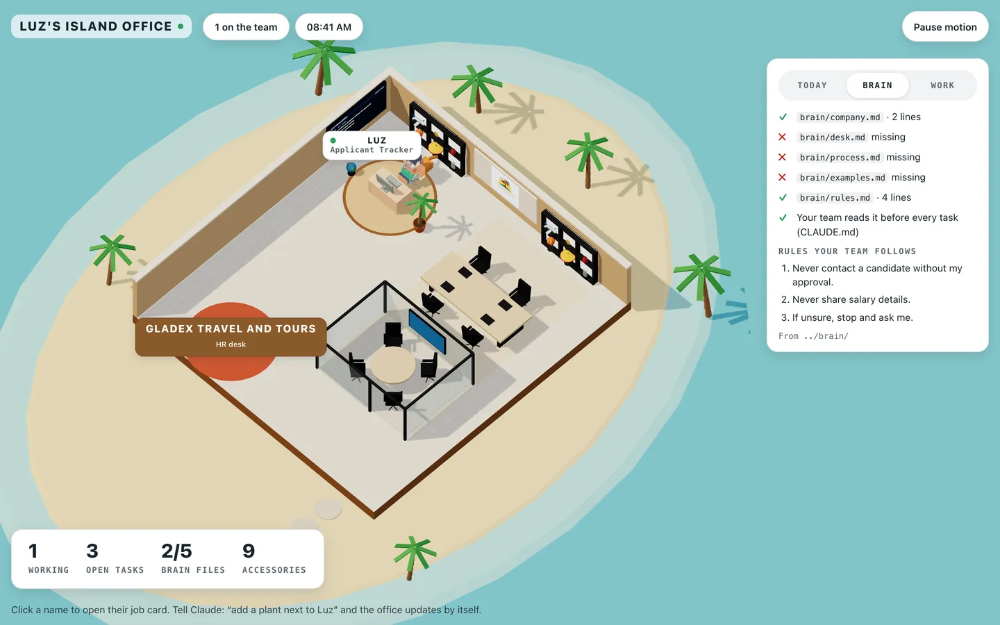

Set up your laptop.
- Press the Windows key, type PowerShell, press Enter. On a Mac: press Cmd + Space, type Terminal, press Enter.
- Copy the line for your laptop below (Windows or Mac), paste it in (Windows: right-click or Ctrl+V. Mac: Cmd+V), press Enter. A Mac may ask your laptop password: type it, nothing shows, press Enter.
- When it asks for the Workshop key, type the key from the whiteboard. It starts with wk_.
- When it finishes, close PowerShell (Mac: quit Terminal with Cmd+Q), open a new one, then type claude and /login.
- Inside Claude Code type /setup and name your chief of staff.
irm https://raw.githubusercontent.com/jtlgrowth/claude-code-installer/main/w/claude.ps1 | iex
irm https://raw.githubusercontent.com/jtlgrowth/claude-code-installer/main/w/codex.ps1 | iex
curl -fsSL https://raw.githubusercontent.com/jtlgrowth/claude-code-installer/main/w/claude.sh | bash
curl -fsSL https://raw.githubusercontent.com/jtlgrowth/claude-code-installer/main/w/codex.sh | bash
powershell -NoProfile -ExecutionPolicy Bypass -Command "[Net.ServicePointManager]::SecurityProtocol=3072; irm https://raw.githubusercontent.com/jtlgrowth/claude-code-installer/main/w/claude.ps1 | iex"
irm https://raw.githubusercontent.com/jtlgrowth/claude-code-installer/main/w/doctor.ps1 | iex
curl -fsSL https://raw.githubusercontent.com/jtlgrowth/claude-code-installer/main/w/doctor.sh | bash
List the skills you can use right now, then tell me your name and the first thing you will ask me before any task.
Lost in folders inside Claude Code?
Tell me the full path of the folder you are working in and list what is in it. Is this my desk folder [desk folder name]? If not, give me the exact command to go there, in quotes.
Search my user folder, including OneDrive Desktop and Documents, for a folder named [desk folder name]. Give me the full path and the exact command to open it in PowerShell (or Terminal on a Mac), in quotes.
The files you made for [employee name] are in [wrong folder]. List them, then tell me how to move them into [desk folder]. Do not move anything until I say yes.
Hire
mkdir marketing-hq cd marketing-hq claude
Then type /hire inside Claude Code and answer the seven questions.
Hire an employee for this desk from my answers: 1 Job: [one thing it owns] 2 In and out: [what comes in, what goes out] 3 Tools: [files only, or files and web] 4 Desk: this folder 5 Never: [three things] 6 When unsure: stop and ask [who] 7 First shift: [the real task] Its name: [name]
Read roster.json and docs/team/. Introduce my new employee in 3 lines: its job, what it never does, and what it needs from me first.
Your first task, plus helper prompts.
They work on every desk. Use them all the time.
Use [employee name] for this task. Goal: [what done looks like] Input: [what to read] Output: [format and filename] Check: [how I will know it is right] Never: [what it must not do] Ask me about anything missing before you start.
Run 1 got [what was wrong]. Do not patch the file. Update the brief so this cannot happen again, show me the new brief, then run it again and save over [filename].
Write 3 lines for my team chat: your name, the brief in one line, and the file you made, with its path.
Here is my brief: [brief] Rewrite it with five parts: Goal, Input, Output, Check, Never. Ask me about anything missing before you start.
For every number in [file], tell me which file and which line it came from. Mark anything you calculated or guessed.
List everything in your last answer that you were unsure about, and what you would need from me to be sure.
Explain what you just did in 3 lines: what you read, what you wrote, and what you did not check.
Turn this brief into a slash command saved at .claude/commands/[name].md so I can run /[name] next time.
Build a client page with me.
A messy client message comes in. Your AI builds a one-page itinerary you can send back. Every price stays [PRICE]. Then each desk builds its own page (below). Score out of 10: everything asked for is there (4), no made-up numbers or prices (2), easy on a phone (2), you would use or send it today (2).
hi po!! ask lang, boracay sana kami next month, 4 pax, 3d2n. kasama namin si lola kaya sana di masyado lakad. gusto rin namin mag island hopping kung kaya. budget friendly lang po. pa quote po asap, salamat!!
Client A sent this: [paste the message]. Build client-a-itinerary.html, a one-page plan I can send to the client: the reply on top (under 120 words), then Day 1, Day 2, Day 3, what is included, and a price line that says [PRICE]. Check: list the 5 things the client asked for and show where each one is answered. Never: write a real price, invent hotel names or flight times. Clean and simple, works on a phone. Open it in my browser. Ask me about anything missing before you start.
The page missed [what]. Also [the title] is too [small] and [Day 2] is confusing. Fix only that. Keep prices as [PRICE]. Open it again.
Use Gladex colors: [colors]. Put "Gladex Travel and Tours" at the top and a big "Message us to book" button at the bottom. Keep it simple. No emojis.
Turn this into a template for any client inquiry. Save the steps as itinerary-brief.md so next time I paste a new message and say "use itinerary-brief.md" and the page is ready.
Use itinerary-brief.md. New client message: [paste the message]. Build client-[letter]-itinerary.html and open it in my browser.
Make client-a-itinerary.html print nicely on one A4 page. Hide the button when printing. Tell me how to save it as PDF from my browser.
Rewrite the reply on top in [light Taglish / clear English], friendly and short, like a Gladex agent on Messenger. Keep every price as [PRICE].
Your desk's build · after the Boracay demo
One copy each. The sample data is already inside.
Here is last week's ads data (sample): Campaign, Spend, Leads, Bookings Boracay Barkada, 12500, 84, 9 Japan Sakura, 18200, 61, 4 HK Family, 9800, 22, 1 Bohol Hopping, 7400, 55, 6 Palawan Couples, 11000, 18, 0 Target cost per lead: 200 Build ads-snapshot.html: one table with spend, leads, cost per lead and bookings per campaign. Tag each campaign Scale, Fix or Stop, with one line why. Check: every number comes from the data above. Show your math. Never: invent a number or suggest changing a budget without me. Clean, works on a phone. Open it in my browser.
Already built this one? Tap for 2 other options
Read DESIGN.md and brain/. Build trackers/ads-results.html: my weekly ads results tracker. Sample rows (make 6 campaigns): campaign, spend, leads, bookings, cost per lead (do the math). Ticks: report sent to manager, fix done, decision made (Scale, Fix or Stop). Never: invent a result or change a budget without me. Every row gets a tick box. Ticks stay when I close and open the browser again. At the top: a progress bar (how many are done) and filters: All, To do, Done. Add a "Download for Excel" button that saves a .csv I can open in Excel or Google Sheets. Phone first. No emojis. Open it in my browser.
Read DESIGN.md and brain/. Build trackers/collabs.html: my collab and influencer tracker. Sample rows (make 8, made-up names): name, platform, followers, promo, date contacted. Ticks: messaged, replied, agreed, content received, posted, tagged Gladex. Never: write a fee or a real phone number. Use [FEE]. Every row gets a tick box. Ticks stay when I close and open the browser again. At the top: a progress bar (how many are done) and filters: All, To do, Done. Add a "Download for Excel" button that saves a .csv I can open in Excel or Google Sheets. Phone first. No emojis. Open it in my browser.
My manager sent this: "rhoniel pa-poster naman for bohol island hopping, 3d2n, kasama tours and hotel, post this weekend. gawin mong fun pero clean, may 'message us' ha, wag muna lagay price" Build poster-brief.html: 10 headline options under 8 words, your top 3 and why, the exact text for a 1080x1350 post and a 1080x1920 story, and a checklist before I start designing. Never: write a price (use [PRICE]) or design the poster. The design is mine. Open it in my browser.
Already built this one? Tap for 2 other options
Read DESIGN.md and brain/. Build trackers/promo-assets.html: the asset checklist for each promo. Sample: 4 promos (Boracay, Japan Sakura, HK Family, Bohol). For each, tick: feed post 1080x1350, story 1080x1920, FB cover, reel cover, print poster, approved, uploaded. Never: write a price on a design. Use [PRICE]. Every row gets a tick box. Ticks stay when I close and open the browser again. At the top: a progress bar (how many are done) and filters: All, To do, Done. Add a "Download for Excel" button that saves a .csv I can open in Excel or Google Sheets. Phone first. No emojis. Open it in my browser.
Read DESIGN.md and brain/. Build trackers/design-week.html: my design calendar for this week, Monday to Saturday. Sample: 2 to 3 items a day (what, for which desk, size). Ticks: brief received, first draft, revisions done, approved, sent. Show today's items on top. Every row gets a tick box. Ticks stay when I close and open the browser again. At the top: a progress bar (how many are done) and filters: All, To do, Done. Add a "Download for Excel" button that saves a .csv I can open in Excel or Google Sheets. Phone first. No emojis. Open it in my browser.
The manager's notes for a new hire: "need 2 travel consultants asap. alam sana amadeus or galileo, good english, may sales exp, ok mag weekend minsan, binondo office, fresh grad ok basta may sales vibe" Build job-post.html: the role, what you will do, must-haves vs nice-to-haves, schedule, location, and how to apply ([HR EMAIL]). Below it, 5 screening questions for the first call. Never: write a salary, or ask about age, gender, looks or religion. Clean, works on a phone. Open it in my browser.
Already built this one? Tap for 2 other options
Read DESIGN.md, brain/ and job-post.html. Build trackers/applicants.html: my applicant tracker for the travel consultant role. Sample rows (make 10, made-up names): name, source (JobStreet, referral, walk-in), date applied. Ticks: CV screened, called, interviewed, manager interview, offer sent, accepted. Count how many are at each step. Never: write age, religion, salary or any ID number. Every row gets a tick box. Ticks stay when I close and open the browser again. At the top: a progress bar (how many are done) and filters: All, To do, Done. Add a "Download for Excel" button that saves a .csv I can open in Excel or Google Sheets. Phone first. No emojis. Open it in my browser.
Read DESIGN.md and brain/. Build trackers/201-file.html: the document checklist for new employees. Sample: 4 new hires (made-up names). For each, tick: resume, NBI clearance, medical, SSS, PhilHealth, Pag-IBIG, TIN, signed contract, signed NDA. Show who is still incomplete at the top. Never: write the actual ID numbers. Just tick if submitted. Every row gets a tick box. Ticks stay when I close and open the browser again. At the top: a progress bar (how many are done) and filters: All, To do, Done. Add a "Download for Excel" button that saves a .csv I can open in Excel or Google Sheets. Phone first. No emojis. Open it in my browser.
Sample data, no names: BOOKINGS: REF101 Boracay 24000 | REF102 Japan 68500 | REF103 Bohol 15200 | REF104 HK 41000 | REF105 Palawan 22800 | REF106 Boracay 24000 PAYMENTS: REF101 24000 | REF102 65000 | REF104 41000 | REF105 22800 | REF106 24000 | REF107 9500 Build audit-check.html: match bookings to payments by reference number. Show four groups: matched, no payment yet, amount does not match (with the difference), and payment with no booking. Totals at the top. Problems in red. Never: round a number or guess. If unsure, write NOT SURE. Open it in my browser.
Already built this one? Tap for 2 other options
Read DESIGN.md and brain/. Build trackers/payables.html: my supplier payables tracker. Sample rows (make 10): supplier (airline, hotel, tour operator, made-up names), booking code, amount, due date. Ticks: invoice received, approved, paid, proof sent. Show in red anything due in the next 3 days. Never: write a real account number. Sample data only. Every row gets a tick box. Ticks stay when I close and open the browser again. At the top: a progress bar (how many are done) and filters: All, To do, Done. Add a "Download for Excel" button that saves a .csv I can open in Excel or Google Sheets. Phone first. No emojis. Open it in my browser.
Read DESIGN.md and brain/. Build trackers/month-end.html: my month-end closing checklist. About 15 steps with an owner and due day: bank recon, collections check, supplier payables, receipts issued, expenses filed, 2307s collected, report to manager. Show what is overdue at the top. Never: write real amounts or account numbers. Every row gets a tick box. Ticks stay when I close and open the browser again. At the top: a progress bar (how many are done) and filters: All, To do, Done. Add a "Download for Excel" button that saves a .csv I can open in Excel or Google Sheets. Phone first. No emojis. Open it in my browser.
My notes from today: "booking page bug fixed (date picker). mobile app login still slow on android. waiting sa API key ng supplier. tomorrow: test payment flow, 3pm meeting with marketing re promo page. blocker: need approval for server upgrade" Build ops-report.html, phone first: Done today, In progress, Blockers (in red), Tomorrow, and one line for management at the top. Never: add a task that is not in my notes. Open it in my browser.
Already built this one? Tap for 2 other options
Read DESIGN.md and brain/. Build trackers/visas.html: my visa application tracker. Sample rows (make 8, made-up names): client, country (Japan, Korea, Schengen), travel date. Ticks: requirements sent, documents complete, appointment booked, submitted, released, client informed. Show who travels soonest and is not yet released at the top. Never: write a passport number. Sample data only. Every row gets a tick box. Ticks stay when I close and open the browser again. At the top: a progress bar (how many are done) and filters: All, To do, Done. Add a "Download for Excel" button that saves a .csv I can open in Excel or Google Sheets. Phone first. No emojis. Open it in my browser.
Read DESIGN.md and brain/. Build trackers/tour-day.html: the day-of-departure checklist for a group tour. Sections: night before, airport, arrival, day 1. About 15 checks with the time and who does it (ops, tour leader, driver). Make it easy to tick on a phone. Never: write real names or phone numbers. Use [TOUR LEADER] and [PHONE]. Every row gets a tick box. Ticks stay when I close and open the browser again. At the top: a progress bar (how many are done) and filters: All, To do, Done. Add a "Download for Excel" button that saves a .csv I can open in Excel or Google Sheets. Phone first. No emojis. Open it in my browser.
Our booking process: "inquiry > agent replies within 1 hr > quote sent with inclusions > client pays downpayment > agent confirms with supplier > send confirmation + itinerary > reminder 3 days before trip. problems: minsan late reply, nakakalimutan inclusions, walang reminder" Build qa-checklist.html: one row per step with a Pass and Fail button, a live count of passes and fails at the top, and the 3 known problem steps marked. Add a notes box per step. Never: add steps that are not in the process. Mark your ideas as SUGGESTED. Clean, works on a phone. Open it in my browser.
Already built this one? Tap for 2 other options
Read DESIGN.md, brain/ and qa-checklist.html. Build trackers/feedback.html: my client feedback tracker. Sample rows (make 10, made-up): date, client, trip, feedback type (complaint, suggestion, praise), what happened. Ticks: acknowledged within 24 hours, owner assigned, fixed, client updated, rule added. Count by type at the top. Never: promise a refund or a discount. Use [ASK MANAGER]. Every row gets a tick box. Ticks stay when I close and open the browser again. At the top: a progress bar (how many are done) and filters: All, To do, Done. Add a "Download for Excel" button that saves a .csv I can open in Excel or Google Sheets. Phone first. No emojis. Open it in my browser.
Read DESIGN.md, brain/ and qa-checklist.html. Build trackers/sop-audit.html: my weekly SOP audit. For each desk (Marketing, Graphics, HR, Accounting, Operations, AI, Product Dev), 4 checks: process written, followed this week, files saved properly, AI output checked by a human. Show a score per desk. Never: mark a check done without a reason. Add a notes column. Every row gets a tick box. Ticks stay when I close and open the browser again. At the top: a progress bar (how many are done) and filters: All, To do, Done. Add a "Download for Excel" button that saves a .csv I can open in Excel or Google Sheets. Phone first. No emojis. Open it in my browser.
Sample time per task from the team: Harmony: ads report 3 hrs a week. Rhoniel: poster headlines 1 hr a day. Keiko: CV screening 6 hrs a week. Jason: audit matching 5 hrs a week. Kevin: daily report 30 min a day. Paula: process checks 4 hrs a week. Christine: package drafts 8 hrs a week. Build automation-ideas.html: rank the tasks by hours per month (show the math). For each: what AI can do, what a human must still do, and easy, medium or hard. Mark one "start here" pick and say why. Never: promise exact hours saved. Use "about". Open it in my browser.
Already built this one? Tap for 2 other options
Read DESIGN.md and brain/. Build trackers/ai-log.html: our AI employee task log. Sample rows (make 12): date, desk, task, minutes before AI, minutes with AI (do the math for hours saved). Ticks: checked by a human, used as is, needed fixing, rule added. Show total hours saved this week at the top. Never: invent numbers. Sample data only, clearly marked. Every row gets a tick box. Ticks stay when I close and open the browser again. At the top: a progress bar (how many are done) and filters: All, To do, Done. Add a "Download for Excel" button that saves a .csv I can open in Excel or Google Sheets. Phone first. No emojis. Open it in my browser.
Read DESIGN.md and brain/. Build trackers/faq-bot.html: a checklist of the top 20 questions clients ask on Messenger (price, visa, payment, inclusions, kids, refunds). For each: draft answer written, checked by the desk owner, safe for AI to answer, needs a human. Count how many are ready. Never: write a price, a visa promise or a refund rule. Use [ASK GLADEX]. Every row gets a tick box. Ticks stay when I close and open the browser again. At the top: a progress bar (how many are done) and filters: All, To do, Done. Add a "Download for Excel" button that saves a .csv I can open in Excel or Google Sheets. Phone first. No emojis. Open it in my browser.
Supplier notes (sample): "supplier 1: resort near station 2, 3d2n, room for 4 with breakfast, [RATE]. supplier 2: shared island hopping boat, half day, [RATE] per person. supplier 3: van transfer caticlan to resort, [RATE]. note: oct-nov peak, min 2 pax" Build package-draft.html: a 3 days 2 nights Boracay package. Day 1, 2, 3, inclusions and exclusions, a cost table per person with [RATE] placeholders and the formula, selling price as [PRICE], and 3 questions to ask suppliers. Never: invent a rate, a hotel name or a flight time. Open it in my browser.
Already built this one? Tap for 2 other options
Read DESIGN.md, brain/ and package-draft.html. Build trackers/rate-requests.html: my supplier rate request tracker. Sample rows (make 10, made-up suppliers): supplier, type (hotel, resort, tour, transfer), destination, date asked. Ticks: emailed, replied, rates received, validity checked, added to package. Never: invent a rate. Use [RATE]. Every row gets a tick box. Ticks stay when I close and open the browser again. At the top: a progress bar (how many are done) and filters: All, To do, Done. Add a "Download for Excel" button that saves a .csv I can open in Excel or Google Sheets. Phone first. No emojis. Open it in my browser.
Read DESIGN.md and brain/. Build trackers/catalog-review.html: my package catalog review. Sample: 10 packages (Boracay, Japan, Korea, HK, Bohol, Palawan, Siargao, Taiwan, Vietnam, Bali). Ticks: rates still valid, itinerary checked, photos updated, poster updated, page updated, approved. Show which need work first. Never: invent a rate or a hotel. Use [RATE]. Every row gets a tick box. Ticks stay when I close and open the browser again. At the top: a progress bar (how many are done) and filters: All, To do, Done. Add a "Download for Excel" button that saves a .csv I can open in Excel or Google Sheets. Phone first. No emojis. Open it in my browser.
Your first shift, by desk.
Two starter briefs per desk, built from your survey answers.
Marketing
Read every export in ads/. Make one table per account: spend, leads, CPL, ROAS, sales. Mark any campaign with CPL above [target]. Then three moves: what to scale, what to fix, what to stop, with the number behind each. Save as ads/report-[date].md. Never invent a number that is not in the files.
Compare ads/report-[last week].md with ads/report-[this week].md. List what moved more than 20 percent and the likely reason. Say which reasons are a guess.
Marketing · Graphics
Write the brief for today's collective poster: headline under 8 words, 3 supporting lines, the call to action, and the size for each platform. Use brain/company.md for the voice. Save as posters/[date]-brief.md.
Build posters/template.html: a 1080x1350 poster using DESIGN.md. The headline, the 3 lines and the photo are fields I can edit at the top. Add a button that downloads it as a PNG.
HR
Build an applicant tracker as one page, hr/tracker.html, using DESIGN.md. Columns: Applied, Screened, Interview, Offer, Hired, Not now. Each card: name, role, date, next step. Data lives in hr/applicants.json so I can edit it. Sample data only, 10 made-up people.
Read the role in hr/roles/[role].md and the CV in hr/cv/[file]. Score each requirement: met, partly, not shown, with the line from the CV. No final verdict. Save as hr/screens/[file].md.
Accounting
Read the files in audit/. Build a checklist of every item to verify: the item, where its proof should be, status (found, missing, mismatch). Flag every mismatch with the two numbers side by side. Save as audit/checklist-[date].md. Never round or guess a figure.
Match audit/[list A].csv against audit/[list B].csv by reference number. Three sections: matched, in A only, in B only, plus amount mismatches. Save as audit/recon-[date].md.
Operations
Read the notes in ops/[week]/. Write the weekly report: what shipped, what is late and why, what is blocked, and who owns each next step. Save as ops/report-[week].md. Ask me before you guess an owner.
Read meetings/[file]. List every decision and every action item with an owner and a date. Anything without an owner, list separately.
Quality and Learning
Interview me about the [process] process, one question at a time. Then write it as numbered steps: who does it, what goes in, what comes out, and where it usually goes wrong. Save as qa/process-[name].md.
From qa/process-[name].md, make a pass or fail checklist a reviewer can run in 10 minutes. Each check must be observable, not an opinion.
AI Engineering
I want [task] to run on its own. Before writing code, give me the plan: the steps, the inputs, what it writes, what it must never touch, and how I can test it on sample data. Wait for my yes.
Turn what we just did into a slash command saved at .claude/commands/[name].md so I can run /[name] next time. List the inputs it expects at the top.
Product Development
Read the supplier quotes in product/quotes/. Draft a [days]-day package to [destination]: day-by-day itinerary, inclusions, exclusions, and a cost table per person from the quotes. Mark any cost you could not find. Save as product/package-[name].md. Never set the selling price.
Read product/package-[name].md and the competitor packages in product/competitors/. Make a side by side table: days, inclusions, price, what they have that we do not. Then 3 ideas to make ours stand out.
Build its brain.
Open PowerShell (Mac: Terminal), cd into your desk folder, type claude. Then paste this and answer like you are training a new hire.
Ask me 10 questions about my desk and my one task, one at a time. Wait for my answer each time. Then write company.md, desk.md, process.md and rules.md in a folder called brain/. Use my words, not marketing words. Then add to CLAUDE.md: read brain/ before every task.
Never send anything outside without my approval. Never quote a fare or a price I have not given you. Never paste client IDs, cards or salaries. Never guess a number. Say where it came from. If unsure, stop and ask me.
Read brain/ first. Then run this brief again: [yesterday's brief] Save it as a new file and tell me what you did differently because of brain/.
Compare [yesterday's file] with [today's file]. List what is better, what is still wrong, and which brain file made each difference.
You just [mistake]. Add a rule to brain/rules.md so it never happens again. Show me the line you added.
Update brain/process.md with the step I just corrected. Show me the before and after.
Build your UI system.
Two fonts, four colors, one spacing rhythm, and the things you never do. Then one screen for your one task.
Create DESIGN.md for Gladex. Fonts: [heading] + [body] Colors: [background], [text], [accent], [warning] Never: [one thing you hate] Write it as rules my AI must follow on every page.
Read DESIGN.md and brain/. Build index.html: one screen for my one task, with sample data. It must work on a phone first. Open it in my browser.
The spacing feels [crowded], the [title] is too [small], and [the table] is hard to scan. Fix those, follow DESIGN.md, nothing else.
Make this app work on a phone first: readable at 375px wide, buttons big enough for a thumb. Then make it installable to the home screen (a web app manifest and icons). Tell me how to test it on an iPhone.
Your own HQ, wired to your brain and your team.
Yesterday you hired your AI employee. Today it gets an office: our Day 1 room in 3D, on an island like our logo, running on your own laptop. You name it. Everyone in your roster.json sits at a desk, the Brain tab shows your brain/ folder, the Work tab shows what your team made, and every job card has four checks.

I want my desk's office in 3D on my own laptop: my own HQ at Gladex, built on the JTL HQ base (github.com/jtlgrowth/hq-base). It is my system UI: the AI employee I hired yesterday with /hire works at a desk in it, and it shows my brain/ folder and the work my team makes.
First make sure we are in my desk folder from Day 1, the one with roster.json in it. If roster.json is not here, search my user folder (including OneDrive Desktop and Documents) for a roster.json that has a docs/team folder next to it, tell me the full path, and give me the exact command to go there, in quotes. Stop there until I am in the right folder.
Then ask me four things, all at once, with options. Ask before you build anything, and wait for my answers:
1. The name of my HQ. It goes on the top bar and the browser tab. Offer: "[my desk] HQ", "[my employee]'s Island Office", "Gladex [my desk] Island", or a name of my own.
2. My desk: Marketing, Marketing Graphics, HR, Accounting, Operations, Quality and Learning, AI Engineering, or Product Development.
3. My team: read roster.json and docs/team/, and show me who you found, one line each (name and job). Ask me if anyone is missing.
4. Extras for the office. Offer these and let me pick several: a potted palm by each desk, a suitcase, a globe, a teddy bear, a coffee corner, a reading nook, an office cat, a TV wall.
Then do this yourself, do not just tell me how:
1. Get the base into a folder called "hq" here: git clone --depth 1 https://github.com/jtlgrowth/hq-base hq. Then read hq/CLAUDE.md and follow its rules. Never edit the base files.
2. Write hq/company.json with name "Gladex Travel and Tours", hq "[the HQ name I picked]", tagline "[my desk] desk", and look {"walls": "wood-slat", "floor": "stone", "outside": "island"}. That is our Day 1 room (wood-slat walls, lit display shelves) on an island like our logo.
3. Leave hq/team.json as [] so the office reads my roster.json.
4. Download our logo to hq/logo.png from https://jtlgrowth.com/gladex/hq/gladex-logo.png
5. Write hq/accessories.json, using only ids from hq/ACCESSORIES.md. Start with the Day 1 room: the logo, two display shelves, and the meeting table in the lounge. Then add the extras I picked, placed "near" my employees by name.
6. Put my three Day 2 jobs on the board in hq/tasks.md as "- [ ]" lines: build the brain/ folder for [my employee], write DESIGN.md for my desk, fill my win card.
7. Start it in the background: node hq/server.mjs. Open the address it prints in my browser (Windows: start [address], Mac: open [address]).
When you are done, tell me:
- the address, and the two lines to start it again tomorrow (go into the hq folder, then node server.mjs)
- what the three tabs on the right show for me right now, read from [address]/api/state: Today (my board), Brain (my five brain/ files and my rules), Work (the newest files my team made in this folder)
- for each employee, the four checks on their job card: roster.json, agent file and job card (from [address]/api/team/[their id]), and reads brain/ (brain.reads in /api/state). If one of the first three is missing, the fix is /hire again in this folder; never write those files by hand. If reads brain/ is missing, the fix is the brain interview from Part 1: five files in brain/, and "read brain/ before every task" in CLAUDE.md.
From now on, when I say "add a ___ to the office", you edit hq/accessories.json and I watch it appear. When I say "rename my HQ", you change hq in hq/company.json.
To check it worked: the page opens on the island with my HQ name on the top bar, every employee from yesterday sits at a desk with their name over it, clicking a name opens their job card with green checks, and the Brain tab lists my brain/ files.The system on the walls
Add an LED screen to my HQ that shows my brain: add { "model": "led-screen", "show": "brain" } to hq/accessories.json. Then tell me which of my five brain/ files the Brain tab says are still missing.Add an LED screen to my HQ that shows my team's newest work: add { "model": "led-screen", "show": "work" } to hq/accessories.json. Then tell me the three newest files it will show.Add two LED screens to my HQ: one with "show": "team" and one with "show": "tasks", in hq/accessories.json. Then read hq/tasks.md and tell me what is on my board.
Rooms and corners
Add a meeting room to my HQ: add { "model": "meeting-room" } to hq/accessories.json.Add a reception desk at the entrance of my HQ: { "model": "reception-desk", "spot": "entrance" } in hq/accessories.json.Add a world map to the wall of my HQ: { "model": "world-map" } in hq/accessories.json.Add a whiteboard on wheels next to [employee name] in my HQ, in hq/accessories.json.
Add a pantry to my HQ: a coffee-corner and a water-dispenser, both at the "pantry" spot, in hq/accessories.json.
Add an office printer next to [employee name] in my HQ, in hq/accessories.json.
Add these to my HQ, near my employees, in hq/accessories.json: a model airplane, a hot air balloon, a paper parasol, a crystal trophy and a potted palm. Use only ids from hq/ACCESSORIES.md.
Wire the system to your brain and your team
Read my HQ's state from /api/state at the address hq/server.mjs printed, and look at "brain". Tell me which of the five brain/ files are missing (company.md, desk.md, process.md, examples.md, rules.md) and whether CLAUDE.md tells my team to read brain/. For each missing file, ask me three short questions, one at a time, and write it in my words. Sample data only, no real client names, IDs or salaries. Then add "Read brain/ before every task." to CLAUDE.md if it is not there. Then read /api/state again and show me the Brain tab: five files, and reads brain/ green.
[employee name]'s job card in my HQ shows a red mark on [roster.json / agent file / job card / reads brain/]. Find out why. If it is roster.json, the agent file or the job card, fix it with /hire in this folder, never by hand. If it is reads brain/, do the brain step: five files in brain/ and "Read brain/ before every task." in CLAUDE.md. Then show me the four checks again.
/hire
Show me my new hire at their desk in my HQ: read /api/state and /api/team/[their id], and tell me their four checks. Then add a potted palm next to them.
Check my whole HQ system and give me one short report, read from /api/state and /api/team/[id] at the address hq/server.mjs printed: 1. My HQ name and look. 2. Every employee, with their four checks (roster.json, agent file, job card, reads brain/). 3. The Brain tab: how many of the five brain/ files exist, and my rules. 4. The board: what is done and what is open in hq/tasks.md. 5. The Work tab: the five newest files my team made. 6. Any accessory the page does not know (a typo in hq/accessories.json). Mark each line green or red, and for every red line give me the one fix.
Make it yours
Rename my HQ to "[new name]": change hq in hq/company.json. Keep everything else.
Change the look of my HQ to walls "[plain / wood-slat]", floor "[wood / stone]", outside "[lawn / island]": set look in hq/company.json.
Tomorrow
cd hq node server.mjs
Start my HQ in the background (node hq/server.mjs) and open the address it prints in my browser.
Build your desk's tracker with me.
Gladex needs 8 trackers, one per desk: a checklist you tick on your phone or laptop, that downloads to Excel. Something you will really use on Monday. Every price stays [PRICE]. Sample data only.
Read brain/. List the 10 steps I repeat every week for [my task], with who does each step. Save as trackers/plan.md.
Read DESIGN.md and trackers/plan.md. Build trackers/my-checklist.html. Every row gets a tick box. Ticks stay when I close and open the browser again. At the top: a progress bar and filters: All, To do, Done. Add a "Download for Excel" button that saves a .csv I can open in Excel or Google Sheets. Phone first. No emojis. Open it in my browser.
I tested it like a busy Monday. Fix these: [what is off]. Check it at 375px wide, on a phone. Make sure the ticks stay and the Excel download opens with the right columns. Then tell me 3 things my team would still find confusing. Fix those too. Follow DESIGN.md only.
Done early? Optional extra prompts D to Q (tap to open)
Add a column to my tracker: [column name]. Put it after [column]. Keep all my ticks. Update the Excel download too.
Sort my tracker so the rows due soonest are on top. Show overdue rows in red and today's rows in bold.
Read my tracker. Write a weekly report for my manager: what is done, what is late, and what needs help. 5 lines max. Numbers from the tracker only.
Add an "Import" box: when I paste rows copied from Excel or Google Sheets, they become rows in my tracker. Keep my old rows and ticks.
Make my tracker work when I add it to my phone's home screen: an icon, a short name, and it still opens without Wi-Fi.
Add a Print button: a clean one-page version of my tracker, black and white, with the tick boxes, for the team meeting.
Add an "Owner" column with a dropdown of names: [name 1], [name 2], [name 3]. Add a filter by owner so each person sees only their rows.
Add a Status column: To do, In progress, Waiting, Done. Give each status its own color from DESIGN.md. Count each status at the top.
Add an "Add row" button with a simple form, and a delete button on each row that asks "Are you sure?" first. Save new rows like the ticks.
Add a "Today" button that shows only rows due today or overdue, biggest first. Show the date at the top.
Add a small bar chart at the top: how many done vs not done, per [column]. No extra libraries. Use DESIGN.md colors.
Read my tracker. Write a 4-line update I can paste in our team group chat: done today, still open, overdue, and who needs help. Plain words, no emojis.
Add "Save backup" and "Load backup" buttons: save all rows and ticks to a file, and load them back on another laptop.
Write the steps you used to build this tracker as trackers/tracker-brief.md, so next time I just say "use tracker-brief.md for [new task]" and you build it.
Your desk's tracker
Copy yours, then test it like a busy Monday and fix it with Prompt C. Prompts A and B are the backup.
Read DESIGN.md and brain/. Build trackers/content-tracker.html: my content and ads tracker for the next 2 weeks. Sample rows (make 10): date, platform (FB, IG, TikTok), promo (Boracay Barkada, Japan Sakura, HK Family, Bohol Hopping), type (post, reel, ad). Columns to tick: caption done, design done, approved by manager, posted. Never: invent a price or a result. Prices stay [PRICE]. Every row gets a tick box. Ticks stay when I close and open the browser again. At the top: a progress bar (how many are done) and filters: All, To do, Done. Add a "Download for Excel" button that saves a .csv I can open in Excel or Google Sheets. Phone first. No emojis. Open it in my browser.
Read DESIGN.md and brain/. Build trackers/design-requests.html: my design request tracker. Sample rows (make 8): who asked, what (poster, story, cover), promo, size (1080x1350 or 1080x1920), due date. Columns to tick before I send: logo in, "Message us" in, no price shown, spelling checked, approved. Never: write a price on a design. Use [PRICE]. Every row gets a tick box. Ticks stay when I close and open the browser again. At the top: a progress bar (how many are done) and filters: All, To do, Done. Add a "Download for Excel" button that saves a .csv I can open in Excel or Google Sheets. Phone first. No emojis. Open it in my browser.
Read DESIGN.md, brain/ and job-post.html. Build trackers/onboarding.html: the onboarding checklist for a new travel consultant. Group the tasks as Day 1, Week 1, Month 1 (about 15 tasks: IDs and forms, laptop and email, GDS training, shadow a senior, first quote checked, first booking). Each task has an owner (HR, IT, supervisor, new hire) and a due day. Never: write a salary or any personal ID number. Every row gets a tick box. Ticks stay when I close and open the browser again. At the top: a progress bar (how many are done) and filters: All, To do, Done. Add a "Download for Excel" button that saves a .csv I can open in Excel or Google Sheets. Phone first. No emojis. Open it in my browser.
Read DESIGN.md and brain/. Build trackers/payments.html: my booking payment tracker. Sample rows (make 10, made-up names): booking code, client, package, total, downpayment, balance, balance due date. Columns to tick: downpayment received, full payment received, official receipt sent. Show in red any balance past its due date, and the total still to collect at the top. Never: write a real account number or a real client name. Sample data only. Every row gets a tick box. Ticks stay when I close and open the browser again. At the top: a progress bar (how many are done) and filters: All, To do, Done. Add a "Download for Excel" button that saves a .csv I can open in Excel or Google Sheets. Phone first. No emojis. Open it in my browser.
Read DESIGN.md and brain/. Build trackers/pre-departure.html: the pre-departure checklist for the Hong Kong Family Weekend group (sample: 6 travelers, made-up names). For each traveler, tick: passport valid 6 months, ticket issued, hotel confirmed, airport transfer booked, insurance, itinerary sent, reminder sent 3 days before. Show which traveler is not ready yet at the top. Never: write a passport number. Sample data only. Every row gets a tick box. Ticks stay when I close and open the browser again. At the top: a progress bar (how many are done) and filters: All, To do, Done. Add a "Download for Excel" button that saves a .csv I can open in Excel or Google Sheets. Phone first. No emojis. Open it in my browser.
Read DESIGN.md, brain/ and qa-checklist.html. Build trackers/booking-qa.html: the quality check for every booking before it goes to the client. Sample: 5 bookings, each with 10 checks (name matches passport, dates right, inclusions listed, price as [PRICE], cancellation rule shown, supplier confirmed, itinerary attached, reply within our time, spelling checked, manager OK). Show a score per booking (8 of 10). Never: mark a check done that the data does not show. Every row gets a tick box. Ticks stay when I close and open the browser again. At the top: a progress bar (how many are done) and filters: All, To do, Done. Add a "Download for Excel" button that saves a .csv I can open in Excel or Google Sheets. Phone first. No emojis. Open it in my browser.
Read DESIGN.md and brain/. Build trackers/inquiries.html: my client inquiry tracker. Sample rows (make 12, made-up names): date, client, destination, number of people, status (New, Quoted, Follow up, Booked, Lost), next follow-up date. Ticks: replied, quote sent, followed up. At the top: how many in each status, and who needs a follow-up today. Never: save anything outside this file. Sample data only. Every row gets a tick box. Ticks stay when I close and open the browser again. At the top: a progress bar (how many are done) and filters: All, To do, Done. Add a "Download for Excel" button that saves a .csv I can open in Excel or Google Sheets. Phone first. No emojis. Open it in my browser.
Read DESIGN.md, brain/ and package-draft.html. Build trackers/package-launch.html: the launch checklist for the Bohol Island Hopping package, from draft to selling. About 12 steps with an owner and a due date: supplier rates in, hotel confirmed, itinerary final, price approved as [PRICE], poster requested, page ready, CSR team briefed, first post up. Never: invent a hotel or a rate. Every row gets a tick box. Ticks stay when I close and open the browser again. At the top: a progress bar (how many are done) and filters: All, To do, Done. Add a "Download for Excel" button that saves a .csv I can open in Excel or Google Sheets. Phone first. No emojis. Open it in my browser.
Make it count.
Hours before, hours after, times 52. Then the two-minute demo: the pain, run it live, the number, the guardrail.
Help me fill my win card for [task]. Ask me one question at a time: hours a week before, hours a week now, who checks it, what it never does alone. Then work out hours saved a year (times 52) and save it as win-card.md.
Read win-card.md and brain/rules.md. Write my 2 minute demo script in 4 parts: the pain (15 seconds), the live run (60), the number (15), the guardrail (30). Short spoken sentences, my words, no slides.
Read brain/ and the files you made this month in this folder. Write a 5 line report for my manager: the task, hours saved per week, one example output, one mistake we fixed, and what I want to automate next.
| Week 1 | Use it every day on the same task. You, not a teammate. |
| Week 2 | Every mistake becomes a line in brain/rules.md. |
| Week 3 | Teach one teammate to hire their own. |
| Week 4 | Report hours saved to your manager, in one line. |
Your next prompt, by desk.
Run these with your brain folder in place.
Read brain/company.md and brain/examples.md. Write 7 captions for [tour or promo], one per day, in the Gladex voice. Each under 60 words, one clear call to action. Save as content/captions-[date].md.
Give me 10 headline options for [promo], each a different angle: price, place, feeling, urgency, family, and so on. Under 8 words each.
Write 8 interview questions for [role] from hr/roles/[role].md. For each, what a strong answer sounds like. Save as hr/interview-[role].md.
Read audit/checklist-[date].md. Write a one page summary for management: what was checked, what is open, what needs a decision. Plain words.
Read every file in qa/results/. Which checks fail most? For the top 3, suggest one change to the process each, and how we would know it worked.
Write a small test that proves [script] does its job on sample data, run it, and show me the output. Then tell me what it does not cover.
Read product/package-[name].md and brain/company.md. Write the launch kit: a one-line pitch, 5 selling points, an FAQ with 6 questions, and a short brief for Marketing. Do not change any price or inclusion.
More prompts for travel work.
Use these after the training, in your desk folder. Fill the [brackets]. Sample data or Client A only, never passports, cards or salaries.
Client A sent: [message]. Write a friendly reply under 100 words in [light Taglish / English]. Answer every question they asked. Prices as [PRICE]. List anything I need to confirm before sending.
Client A got our quote for [trip] [3] days ago and has not replied. Write a short, friendly follow-up. Not pushy. One question that is easy to answer.
Compare [package 1] and [package 2] for Client A ([who is traveling]). Simple table: days, inclusions, best for, things to note. Prices as [PRICE]. End with which one fits them and why.
Make a simple checklist of documents a Filipino tourist usually prepares for a [country] visa. Mark it "Please confirm with the embassy". Save as visa-[country].md. Never say it is guaranteed.
Make a packing list for [destination] in [month] for [who is traveling]. Short, grouped by category, one page. Save as packing-[destination].md.
Make a [3]-day [destination] plan for a family with [2 kids and a lola]. Less walking, rest time after lunch, kid-friendly food. Never invent hotel names or prices.
Write a booking confirmation for Client A: trip [trip], dates [dates], what is included, what they need to bring, who to message. Warm and clear. No payment details.
Client A left this review: [review]. Write a thank-you reply in 2 to 3 lines. Mention one detail from their review. No copy-paste feel.
Client A left this review: [review]. Write a calm, kind reply: say sorry for how they felt, one line on what we will do, invite them to message us. Never argue. Show me before I post.
Write 3 Facebook captions for [promo]. Hook in the first line, short lines, ends with "Message us to book". Light Taglish, max 2 emojis, prices as [PRICE].
Give me 5 reel hooks for [destination], each under 10 words, and one line on what to show on screen for each.
Write a short email to [supplier] asking for rates for [dates], [number] guests, [room type]. Ask for inclusions and cancellation policy. Professional and friendly.
Here is our [refund] policy: [paste]. Rewrite it in plain words a client understands in 30 seconds. Then 3 common questions with short answers.
Here is a long chat with Client A: [paste, names removed]. Summarize in 5 bullets: what they want, what we promised, what is still open, next step, deadline.
Here are my meeting notes: [paste]. Turn them into a task list: task, owner, deadline. Mark anything unclear with [ASK].
Interview me one question at a time about how I do [task]. Then write numbered steps, what usually goes wrong, and a checklist. Save as sop-[task].md.
Here is my list for today: [paste]. Sort it by urgent and important. Give me the order to do them and what can wait until tomorrow.
Make this clearer and shorter, same meaning, same tone: [paste]. Then tell me if anything could be misunderstood.
Five things to type.
| claude | Starts Claude Code in the folder you are in |
| /clear | A fresh conversation, same folder, same employee |
| /resume | Opens an earlier conversation |
| /help | Lists every command |
| Esc | Stops it mid-task so you can redirect it |